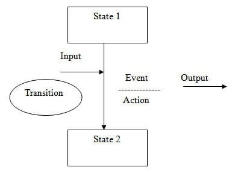

La técnica de transición de estados es una técnica de prueba dinámica, que se utiliza cuando el sistema se define en términos de un número finito de estados y las transiciones entre los estados se rigen por las reglas del sistema.
O, en otras palabras, esta técnica se utiliza cuando las características de un sistema se representan como estados que se transforman entre sí. Las transformaciones están determinadas por las reglas del software. La representación pictórica se puede mostrar como:
'Entonces aquí vemos que una entidad transiciones del Estado 1 al Estado 2 debido a algunos aporte condición, que conduce a una evento y resulta en acción y finalmente da el producción .
Tenemos un televisor el cual posee 4 estados (Enchufado,Desenchufado,Apagado y prendido) estos estados tienen un orden logico el cual deben respetar Ej: No puedo prender el televisor si esta desenchufado